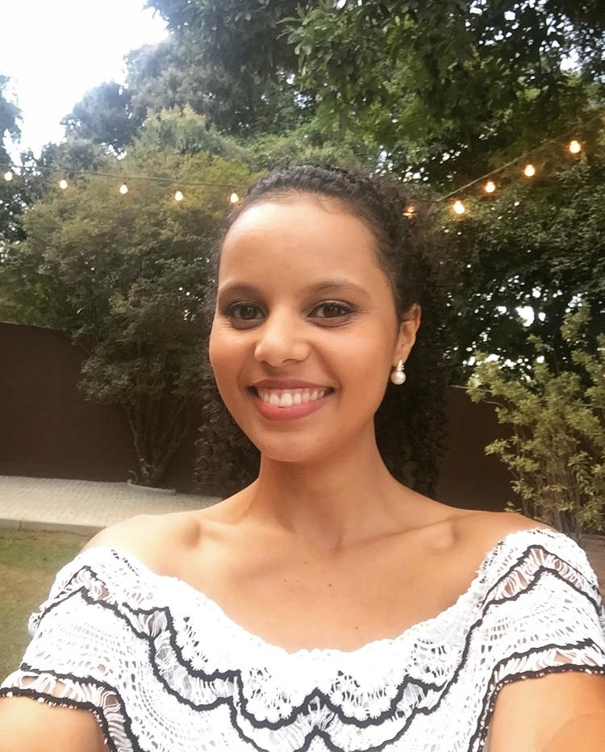

Sobre mim
Página que eu gosto
Quem sou eu?
Pamela Félix da Silvas

Olá, meu nome é Pamela, sou natural de Mariana, Minas Gerais. Sou graduada e mestre em Ciências Biológicas pela Universidade Federal de Ouro Preto.
Atualmente, me aventurei nessa jornada doida que é a transição de carreira. Estou otimista e animada em estudar na Trybe e me tornar uma dev!
Lista de habilidades
- Sou organizada. Um ambiente de trabalho ou pessoal organizado me ajudam a desenvolver melhor minhas tarefas.
- Gosto de compartilhar ideias e conhecimentos e ajudar os outros com o que posso.
- Prezo muito pela comunicação. Uma boa comunicação pode ser meio caminho andado para resolver nossos problemas.
- Sou muito afetuosa. Cuido, me preocupo e sou carinhosa com as pessoas que amo.
- Quando me dedico a alguma atividade, tento executá-la da melhor maneira possível para que possa colher bosd resultados.